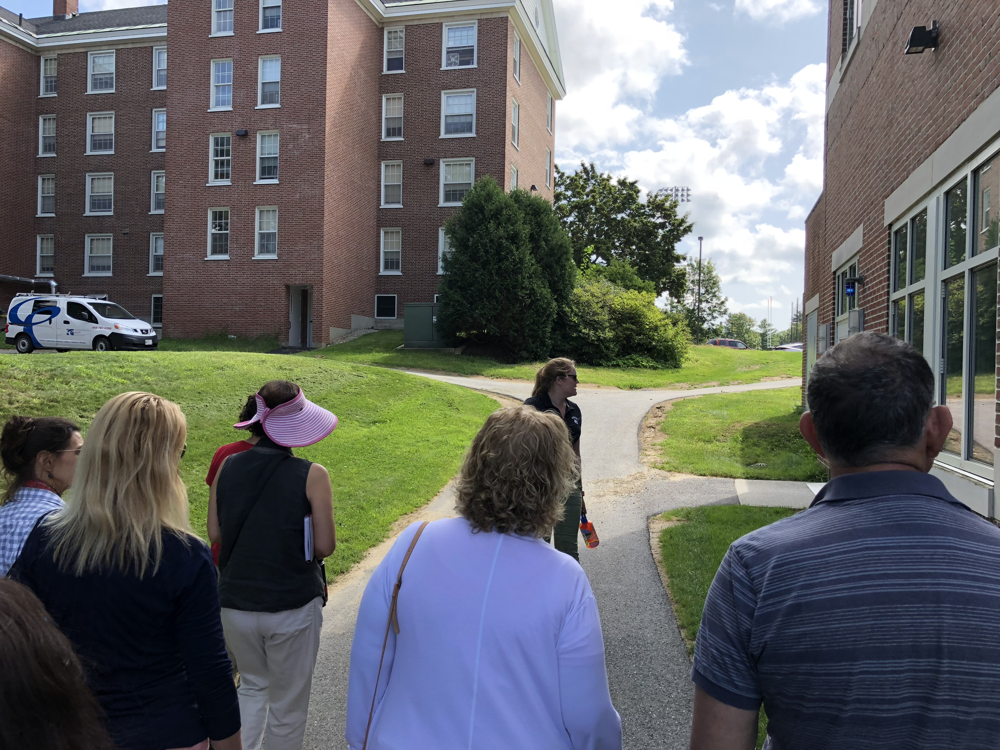
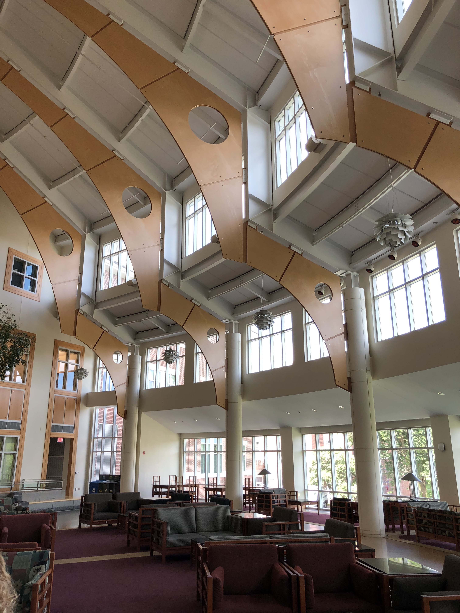

A Visit to Bates College by jgn on Sunday, August 26, 2018 in Colleges, College Visits, Liberal Arts, and Small Liberal Arts Colleges
We spent Monday through Wednesday August 20-22 in Maine and Massachusetts; the three of us visited Bates and Bowdoin, and my daughter and my wife checked out Wellesley (I'm really interested in Wellesley, but had to work that day in Boston). We also considered Colby. Colby fell off the list because it was just a bit too far for us to manage on our visiting schedule. Another consideration is that while we don't have any expectations that Caroline will go to a school near home, schools in Maine and Massachusetts are convenient to Boston, where I work once/month; so if she ever wanted to come down for dinner, it's doable (but harder, we thought, from Colby).
So, Bates.  Bates is another college that closely follows the small liberal arts college (SLAC) template: There are no graduate programs, so the focus is mostly on undergraduate education (I say "mostly" because some of the other SLACs have done some institution building with research centers, theaters, etc.). But Bates is really focused on the the undergraduates. An undergraduate was brought along to the presentation by the admissions official (the particular undergrad didn't say much that was consequential but it was a nice gesture).
Bates is another college that closely follows the small liberal arts college (SLAC) template: There are no graduate programs, so the focus is mostly on undergraduate education (I say "mostly" because some of the other SLACs have done some institution building with research centers, theaters, etc.). But Bates is really focused on the the undergraduates. An undergraduate was brought along to the presentation by the admissions official (the particular undergrad didn't say much that was consequential but it was a nice gesture).
The presentation by the admissions counselor went over familiar ground: A traditional liberal arts program; new building on campus (especially to support the sciences); a culture of collaboration, not competition; support for study abroad; and so forth.
There was a big divergence from the usual admissions officer introduction, though: Bates is located in Lewiston, which is not a cute college town - while it has its nice restaurants and coffee shops, it is more on the poor side. Across the Androscoggin River is Auburn, Maine, the county seat, which seems to lag even more economically. Lewiston is the second largest city in Maine. While Maine went for Clinton, Androscoggin County (which includes both Lewiston and Auburn) went for Trump. So there is quite a difference between the economic profile of the students and that of the surrounding town. Lewiston/Auburn has problems. According to the 2010 census, "About 9.7% of families and 14.3% of the population were below the poverty line, including 20.0% of those under age 18 and 12.4% of those age 65 or over." The College angle? They have made a major cultural investment in working in and with the community. At least in the speaker's presentation, this felt fresh and a little different from what we have been hearing at other colleges. Another interesting fact is that in Lewiston, almost 50% of the population is of French-Canadian or French descent. My daughter is fluent in French, so there might be some interesting outreach opportunities there. The demographic contrast between town and gown is probably exacerbated by the fact that there are a lot of Bates students whose family pay the full costs: only 44% of Bates students take some financial aid (compare that to Macalester's 70% and Grinnell's 90%). I think this economic contrast -- and the fact that Bates encourages student activity in the surrounding community, especially noting the economic situation -- is a differentiator. I know Macalester and Grinnell quite well, and while I know they have programs that interact with their surrounding areas, Bates seems to be different.
Another big differentiator is the curriculum / calendar. Bates College has two semesters; but additionally a 5-week "short term" from late April to May. This short term provides for a block class where students can focus on a topic or possibly travel with a professor. It reminded me of Macalester's old "interim" program. Bates also has General Education Concentrations where are like the concentrations other colleges provide, but to my eye more far-reaching and idiosyncratic. For admissions, Bates is also test-optional (Bowdoin was the first college to do this in 1969). But Bates spent five years studying it, and finally implemented test-optional admissions in 1984. Then, critically, I think, they did a retrospective on test-optional and found that the students who supplied test scores did the same as students who didn't. What do I like here? Bates seems to be extremely invested in defining their own pattern with regarding to the curriculum and admissions. I really like that; too many institutions of higher learning build their programs to match up with peers. It would be interesting to know what the faculty load is to support this kind of curriculum.
They also have GECs (General Education Concentrations). These are courses outside the majors that seem to be designed to stretch students, and are a bit ad hoc / experimental for the teachers as well as the students. The short term and the GECs were big attractions for my daughter.
Alright, on to the college. Bates is a tad scruffier than other elite New England small colleges, with less refinement in the landscaping. The campus is a bit hilly  and quite beautiful. They have the traditional wide campus walk (not unlike Kenyon's Middle Path, but more modest). There's a small lake in the middle of the campus -- Lake Andrews, otherwise known as "the pond." Bates has a nice tradition whereby at the end of the winter the ice is opened up and students do a "puddle jump." The Olin Arts Center and the Museum are right on the lake, as is Pettengill Hall, which has an amazing atrium, with a "window wall." Our tour guide told us that when it snows and you're viewing the campus from the atrium, it feels like you're inside a snow globe; I believe it.  I don't think colleges get enough credit for buildings that are truly well-situated like this one. Pettengill Hall is also the home of many departments, and each department seemed to have its own lounge, which was a nice touch.
Throughout, we saw everyone that suggests that academics are lively: The usual rich assortment of notices on faculty office doors, lots of evidence of work-in-progress by students conducting summer research. I think to get the full picture my daughter would need to visit and stay over a night.
So I see that I didn't post this back when I wrote it on August 26 last year. What else did I want to say? Since we visited Bates, our respect and interest in this college has deepened. I think there is something of the underdog at Bates, and in a good way. Compared to their cohort colleges, Bates has a much smaller endowment (you can really see this in the comparison of endowments for their competitors in the member colleges of their athletic conference). This means that the college has had to make hard choices and squeeze the dollar. They seem to emphasize good old-fashioned (or should I saw new-fashioned?) classroom and "book" learning maybe a bit more than other colleges, with less emphasis on technical/scientific big dollar experimentation. Notably, they established something like a computer science department much later than other small liberal arts colleges; and when they did, they called it Digital and Computational Studies, which makes a lot of sense to me: The program takes a "critical" view of digitization in culture. It is very interesting to see the colleges Bates has selected as comparison schools: Bowdoin, Grinnell, and Pomona . . . but also Allegheny, Assumption, Carthage, Whitman, and Williamette. These later are more regional than the former. Interesting.
Also since we visited Bates, my daughter talked to an alumna and the enthusiasm of a relatively recent graduate was infectious.
In short: A great school that has perhaps had to be a bit more cunning and creative about costs than their cohort. I have no doubt that my daughter would be happy there -- and would return a lot of value to the college because of her enthusiasms, smarts, and engagement.
comments powered by Disqus